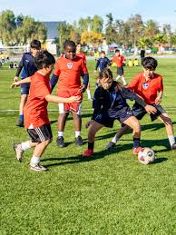
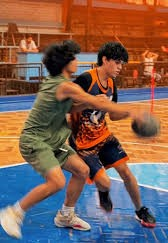

Torneo Deportivo Intercursos


Los estudiantes participaron en un emocionante torneo de fútbol y baloncesto, promoviendo el trabajo en equipo y la sana competencia.


Los estudiantes participaron en un emocionante torneo de fútbol y baloncesto, promoviendo el trabajo en equipo y la sana competencia.

Los alumnos presentaron proyectos muy interesantes relacionados con el sistema solar, la tecnología y la energía eólica.